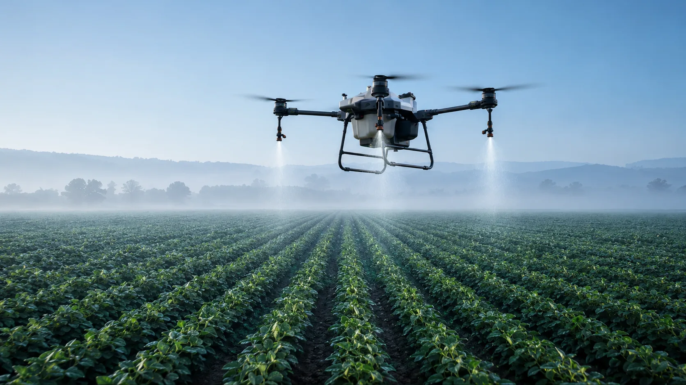
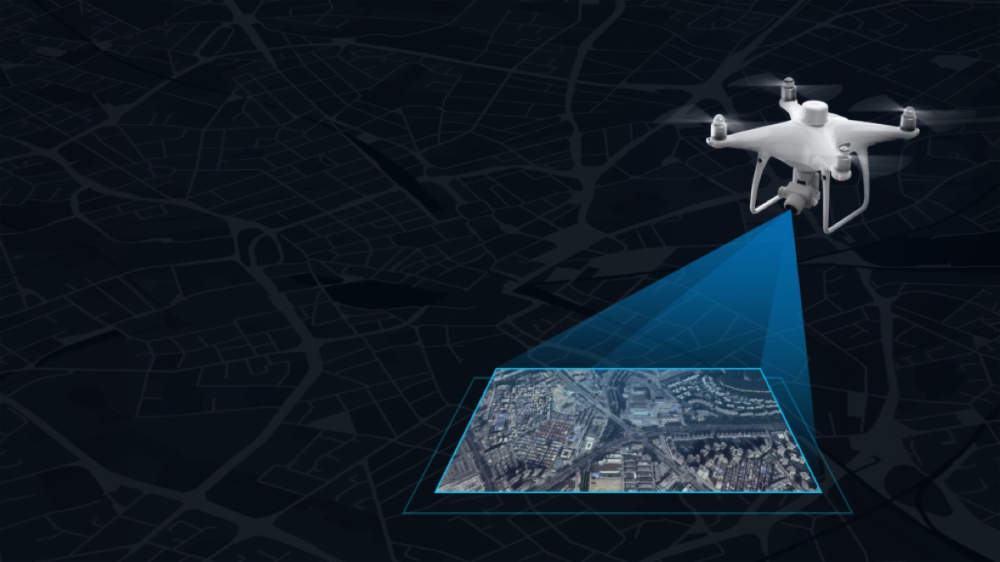

Pilotvorhaben in Vorbereitung
Agrartechnologie
Wir bereiten Pilotvorhaben für hydroponisches Grünfutter und Agrardrohnen vor.
Pilotphase in Vorbereitung
Hydroponisches Grünfutter
Ein geplantes Pilotkonzept soll kontrollierte Produktionsprozesse für frisches Grünfutter unter realen Bedingungen prüfen. Die Pilotphase befindet sich in Vorbereitung.
Visualisierung des Anbauprinzips.
Hydroponik ansehen
Leistungsangebot in Vorbereitung
Agrardrohnen
Anwendungen für Monitoring, Datenerfassung und Präzisionslandwirtschaft werden technisch, regulatorisch und wirtschaftlich vorbereitet.
Referenzbild einer Agrardrohnenplattform.
Agrardrohnen ansehen
Geplante Zusatzleistung
Technische Inspektionen
Drohnenbasierte Sichtprüfungen und strukturierte Datenerfassung werden als mögliche spätere Ergänzung geprüft.
Entwicklung ansehen